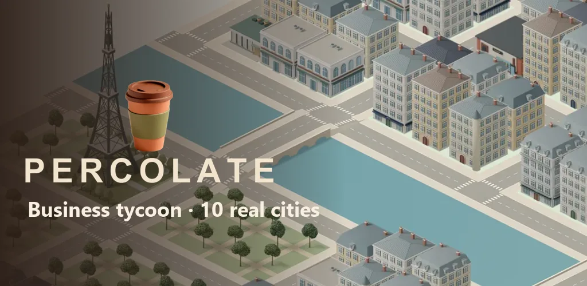
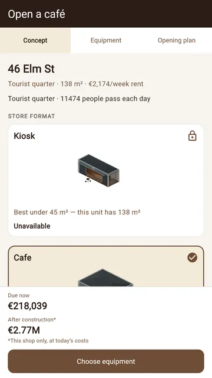
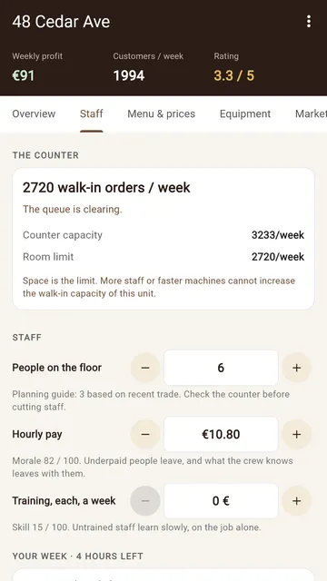
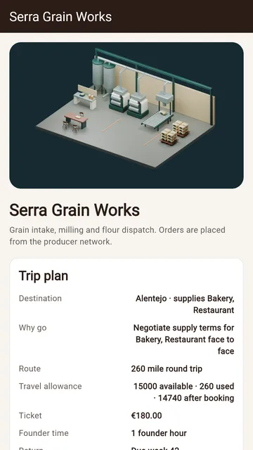

Privacy policy and support
Percolate for Android · Last updated: 26 September 2026
In short: no account, no ads, no analytics and no servers of ours. Your games stay on your device.
Data on your device
Percolate does not need an account. Your careers, the player and company names you choose, and your settings are stored only in the app's private storage on your device. We do not receive them. They stay there until you delete a career, clear the app's data or uninstall the app.
No advertising, no analytics
The app contains no advertising, no behavioural analytics, no crash-reporting service and no cloud save run by us. It does not collect your location, contacts, photos or device identifiers.
Purchases through Google Play
Percolate is free to download. The full game can be unlocked with a one-time in-app purchase processed by Google Play. We never receive your payment-card details. To unlock the full game and restore it after a reinstall, the app asks Google Play which Percolate purchases your Google account owns, and keeps that answer on your device for up to 7 days so the game also works offline. Google handles store and payment data under its privacy policy.
Updates
The app can ask Google Play whether a newer version is available and offer to install it. This check is handled by Google Play.
Exporting and importing careers
If you export a career, the app creates a file and opens Android's share menu, and you choose where it goes. If you import a file, the app reads only the file you pick. Neither sends anything to us.
Android backup
Saved games are included in Android backup and device-transfer rules. When this is on and supported by your device, Android may copy them through your Google account backup. We do not receive and cannot access these backups; your device settings control them.
Links
Links in the app (this page, the store page, the developer profile) open in your browser or in Google Play, where that site's own privacy policy applies.
Children
Percolate is not directed at children under 13. The app collects no personal data from any player.
Support and data requests
Write to percolategame@gmail.com. If you contact us, we receive your email address, your message and any attachments you choose to send, and use them only to answer you. Please do not send passwords or payment details. We keep this correspondence while we handle your request, and afterwards only as long as reasonably needed for follow-up, abuse prevention or legal obligations. You can ask us to delete it at any time.
Security
Game data uses Android's private app storage, which other apps cannot read. Support emails pass through the email providers involved. No method of storage or transmission is completely secure.
Deleting your data
Delete a career from the saves screen. Remove all local data by clearing the app's storage in your device's app settings, or by uninstalling the app. Backups are managed in your device's backup settings. To delete support emails, write to us.
Changes
We will update this page before any change in the app alters how data is handled. The date at the top shows the current version.
Informativa privacy e assistenza
Percolate per Android · Ultimo aggiornamento: 26 settembre 2026
In breve: nessun account, nessuna pubblicità, nessuna analisi e nessun nostro server. Le tue partite restano sul tuo dispositivo.
Dati sul dispositivo
Percolate non richiede un account. Le carriere, i nomi del giocatore e dell'azienda che scegli e le impostazioni sono salvati solo nella memoria privata dell'app sul tuo dispositivo. Noi non li riceviamo. Restano lì finché non elimini una carriera, cancelli i dati dell'app o la disinstalli.
Nessuna pubblicità, nessuna analisi
L'app non contiene pubblicità, analisi del comportamento, servizi di segnalazione degli arresti anomali né salvataggi cloud gestiti da noi. Non raccoglie posizione, contatti, foto o identificativi del dispositivo.
Acquisti tramite Google Play
Percolate si scarica gratis. Il gioco completo si sblocca con un acquisto in-app una tantum gestito da Google Play. Non riceviamo mai i dati della tua carta di pagamento. Per sbloccare il gioco completo e ripristinarlo dopo una reinstallazione, l'app chiede a Google Play quali acquisti di Percolate possiede il tuo account Google e conserva la risposta sul dispositivo per un massimo di 7 giorni, così il gioco funziona anche offline. Google tratta i dati dello store e dei pagamenti secondo la propria informativa privacy.
Aggiornamenti
L'app può chiedere a Google Play se è disponibile una versione più recente e proporti di installarla. Questo controllo è gestito da Google Play.
Esportare e importare carriere
Se esporti una carriera, l'app crea un file e apre il menu di condivisione di Android: sei tu a scegliere dove inviarlo. Se importi un file, l'app legge solo il file che selezioni. In nessuno dei due casi ci viene inviato qualcosa.
Backup Android
I salvataggi rientrano nelle regole di backup e trasferimento di Android. Se la funzione è attiva e supportata dal dispositivo, Android può copiarli tramite il backup del tuo account Google. Non riceviamo questi backup e non possiamo accedervi; li controllano le impostazioni del tuo dispositivo.
Link
I link nell'app (questa pagina, la pagina dello store, il profilo dello sviluppatore) si aprono nel browser o in Google Play, dove si applica l'informativa privacy di quel sito.
Minori
Percolate non è rivolto ai minori di 13 anni. L'app non raccoglie dati personali da nessun giocatore.
Assistenza e richieste sui dati
Scrivi a percolategame@gmail.com. Se ci contatti, riceviamo il tuo indirizzo email, il messaggio e gli eventuali allegati che scegli di inviare, e li usiamo solo per risponderti. Non inviare password o dati di pagamento. Conserviamo la corrispondenza mentre gestiamo la richiesta e, in seguito, solo per il tempo ragionevolmente necessario a seguiti, prevenzione degli abusi od obblighi di legge. Puoi chiederne la cancellazione in qualsiasi momento.
Sicurezza
I dati di gioco usano la memoria privata dell'app prevista da Android, che le altre app non possono leggere. Le email di assistenza passano dai fornitori di posta coinvolti. Nessun metodo di conservazione o trasmissione è completamente sicuro.
Eliminare i tuoi dati
Elimina una carriera dalla schermata dei salvataggi. Rimuovi tutti i dati locali cancellando la memoria dell'app nelle impostazioni app del dispositivo, oppure disinstallandola. I backup si gestiscono nelle impostazioni di backup del dispositivo. Per cancellare le email di assistenza, scrivici.
Modifiche
Aggiorneremo questa pagina prima che una modifica dell'app cambi il modo in cui i dati vengono trattati. La data in alto indica la versione in vigore.
Datenschutzerklärung und Support
Percolate für Android · Zuletzt aktualisiert: 26. September 2026
Kurz gesagt: kein Konto, keine Werbung, keine Analyse und keine eigenen Server. Deine Spielstände bleiben auf deinem Gerät.
Daten auf deinem Gerät
Percolate braucht kein Konto. Deine Karrieren, die von dir gewählten Spieler- und Firmennamen und deine Einstellungen werden ausschließlich im privaten Speicher der App auf deinem Gerät gespeichert. Wir erhalten sie nicht. Sie bleiben dort, bis du eine Karriere löschst, die App-Daten löschst oder die App deinstallierst.
Keine Werbung, keine Analyse
Die App enthält keine Werbung, keine Verhaltensanalyse, keinen Absturzbericht-Dienst und keine von uns betriebene Cloud-Speicherung. Sie erfasst weder Standort noch Kontakte, Fotos oder Gerätekennungen.
Käufe über Google Play
Percolate ist kostenlos herunterzuladen. Das vollständige Spiel lässt sich mit einem einmaligen In-App-Kauf freischalten, den Google Play abwickelt. Wir erhalten niemals deine Zahlungskartendaten. Um das vollständige Spiel freizuschalten und nach einer Neuinstallation wiederherzustellen, fragt die App bei Google Play ab, welche Percolate-Käufe zu deinem Google-Konto gehören, und speichert diese Antwort bis zu 7 Tage auf deinem Gerät, damit das Spiel auch offline funktioniert. Google verarbeitet Store- und Zahlungsdaten gemäß seiner Datenschutzerklärung.
Updates
Die App kann bei Google Play nachfragen, ob eine neuere Version verfügbar ist, und deren Installation anbieten. Diese Prüfung erfolgt über Google Play.
Karrieren exportieren und importieren
Wenn du eine Karriere exportierst, erstellt die App eine Datei und öffnet das Teilen-Menü von Android; du entscheidest, wohin sie geht. Wenn du eine Datei importierst, liest die App nur die von dir gewählte Datei. In keinem Fall wird etwas an uns gesendet.
Android-Sicherung
Spielstände fallen unter die Sicherungs- und Geräteübertragungsregeln von Android. Wenn diese Funktion aktiviert ist und dein Gerät sie unterstützt, kann Android sie über die Sicherung deines Google-Kontos kopieren. Wir erhalten diese Sicherungen nicht und haben keinen Zugriff darauf; sie werden über die Einstellungen deines Geräts gesteuert.
Links
Links in der App (diese Seite, die Store-Seite, das Entwicklerprofil) öffnen sich im Browser oder in Google Play; dort gilt die Datenschutzerklärung der jeweiligen Website.
Kinder
Percolate richtet sich nicht an Kinder unter 13 Jahren. Die App erhebt von keinem Spieler personenbezogene Daten.
Support und Anfragen zu Daten
Schreib an percolategame@gmail.com. Wenn du uns kontaktierst, erhalten wir deine E-Mail-Adresse, deine Nachricht und die Anhänge, die du mitschickst, und verwenden sie nur, um dir zu antworten. Bitte sende keine Passwörter oder Zahlungsdaten. Wir bewahren die Korrespondenz auf, solange wir deine Anfrage bearbeiten, und danach nur so lange, wie es für Rückfragen, Missbrauchsverhinderung oder gesetzliche Pflichten vernünftigerweise nötig ist. Du kannst jederzeit ihre Löschung verlangen.
Sicherheit
Spieldaten liegen im privaten App-Speicher von Android, den andere Apps nicht lesen können. Support-E-Mails laufen über die beteiligten E-Mail-Anbieter. Keine Methode der Speicherung oder Übertragung ist vollkommen sicher.
Deine Daten löschen
Lösche eine Karriere im Spielstand-Bildschirm. Entferne alle lokalen Daten, indem du den App-Speicher in den App-Einstellungen deines Geräts löschst oder die App deinstallierst. Sicherungen verwaltest du in den Sicherungseinstellungen deines Geräts. Um Support-E-Mails löschen zu lassen, schreib uns.
Änderungen
Wir aktualisieren diese Seite, bevor eine Änderung der App den Umgang mit Daten verändert. Das Datum oben zeigt die aktuelle Fassung.
Política de privacidad y soporte
Percolate para Android · Última actualización: 26 de septiembre de 2026
En resumen: sin cuenta, sin anuncios, sin analítica y sin servidores propios. Tus partidas se quedan en tu dispositivo.
Datos en tu dispositivo
Percolate no necesita una cuenta. Tus carreras, los nombres de jugador y de empresa que eliges y tus ajustes se guardan solo en el almacenamiento privado de la app en tu dispositivo. Nosotros no los recibimos. Permanecen allí hasta que borres una carrera, borres los datos de la app o la desinstales.
Sin anuncios, sin analítica
La app no contiene anuncios, analítica de comportamiento, servicios de informes de fallos ni guardado en la nube gestionado por nosotros. No recoge tu ubicación, contactos, fotos ni identificadores del dispositivo.
Compras a través de Google Play
Percolate se descarga gratis. El juego completo se desbloquea con una compra única dentro de la app gestionada por Google Play. Nunca recibimos los datos de tu tarjeta de pago. Para desbloquear el juego completo y restaurarlo tras una reinstalación, la app pregunta a Google Play qué compras de Percolate tiene tu cuenta de Google y guarda esa respuesta en tu dispositivo hasta 7 días, para que el juego funcione también sin conexión. Google trata los datos de la tienda y de pago según su política de privacidad.
Actualizaciones
La app puede preguntar a Google Play si hay una versión más reciente y ofrecerte instalarla. Esta comprobación la realiza Google Play.
Exportar e importar carreras
Si exportas una carrera, la app crea un archivo y abre el menú de compartir de Android; tú eliges adónde va. Si importas un archivo, la app lee solo el archivo que selecciones. En ningún caso se nos envía nada.
Copia de seguridad de Android
Las partidas guardadas están incluidas en las reglas de copia de seguridad y transferencia de Android. Si está activada y tu dispositivo la admite, Android puede copiarlas mediante la copia de seguridad de tu cuenta de Google. No recibimos estas copias ni podemos acceder a ellas; las controlan los ajustes de tu dispositivo.
Enlaces
Los enlaces de la app (esta página, la ficha de la tienda, el perfil del desarrollador) se abren en tu navegador o en Google Play, donde se aplica la política de privacidad de ese sitio.
Menores
Percolate no está dirigido a menores de 13 años. La app no recoge datos personales de ningún jugador.
Soporte y solicitudes sobre datos
Escribe a percolategame@gmail.com. Si nos contactas, recibimos tu dirección de correo, tu mensaje y los archivos adjuntos que decidas enviar, y los usamos solo para responderte. No envíes contraseñas ni datos de pago. Conservamos esta correspondencia mientras atendemos tu solicitud y, después, solo el tiempo razonablemente necesario para el seguimiento, la prevención de abusos o las obligaciones legales. Puedes pedir que la borremos en cualquier momento.
Seguridad
Los datos del juego usan el almacenamiento privado de apps de Android, que otras apps no pueden leer. Los correos de soporte pasan por los proveedores de correo implicados. Ningún método de almacenamiento o transmisión es completamente seguro.
Borrar tus datos
Borra una carrera desde la pantalla de partidas guardadas. Elimina todos los datos locales borrando el almacenamiento de la app en los ajustes de aplicaciones de tu dispositivo, o desinstalando la app. Las copias de seguridad se gestionan en los ajustes de copia de seguridad del dispositivo. Para borrar los correos de soporte, escríbenos.
Cambios
Actualizaremos esta página antes de que un cambio en la app modifique el tratamiento de los datos. La fecha de arriba indica la versión vigente.
Politique de confidentialité et assistance
Percolate pour Android · Dernière mise à jour : 26 septembre 2026
En bref : pas de compte, pas de publicité, pas d'analyse et aucun serveur à nous. Tes parties restent sur ton appareil.
Données sur ton appareil
Percolate ne nécessite aucun compte. Tes carrières, les noms de joueur et d'entreprise que tu choisis et tes réglages sont enregistrés uniquement dans le stockage privé de l'application sur ton appareil. Nous ne les recevons pas. Ils y restent jusqu'à ce que tu supprimes une carrière, effaces les données de l'application ou la désinstalles.
Pas de publicité, pas d'analyse
L'application ne contient ni publicité, ni analyse du comportement, ni service de rapports de plantage, ni sauvegarde dans le cloud gérée par nous. Elle ne collecte ni ta position, ni tes contacts, ni tes photos, ni les identifiants de l'appareil.
Achats via Google Play
Percolate se télécharge gratuitement. Le jeu complet se débloque par un achat intégré unique traité par Google Play. Nous ne recevons jamais les données de ta carte de paiement. Pour débloquer le jeu complet et le restaurer après une réinstallation, l'application demande à Google Play quels achats Percolate appartiennent à ton compte Google et garde cette réponse sur ton appareil jusqu'à 7 jours, afin que le jeu fonctionne aussi hors ligne. Google traite les données de la boutique et de paiement selon sa politique de confidentialité.
Mises à jour
L'application peut demander à Google Play si une version plus récente est disponible et te proposer de l'installer. Cette vérification est effectuée par Google Play.
Exporter et importer des carrières
Si tu exportes une carrière, l'application crée un fichier et ouvre le menu de partage d'Android ; c'est toi qui choisis sa destination. Si tu importes un fichier, l'application lit uniquement le fichier que tu sélectionnes. Rien ne nous est envoyé dans aucun des deux cas.
Sauvegarde Android
Les parties enregistrées relèvent des règles de sauvegarde et de transfert d'appareil d'Android. Si la fonction est activée et prise en charge par ton appareil, Android peut les copier via la sauvegarde de ton compte Google. Nous ne recevons pas ces sauvegardes et ne pouvons pas y accéder ; elles dépendent des réglages de ton appareil.
Liens
Les liens de l'application (cette page, la fiche de la boutique, le profil du développeur) s'ouvrent dans ton navigateur ou dans Google Play, où s'applique la politique de confidentialité du site concerné.
Enfants
Percolate ne s'adresse pas aux enfants de moins de 13 ans. L'application ne collecte aucune donnée personnelle auprès d'aucun joueur.
Assistance et demandes relatives aux données
Écris à percolategame@gmail.com. Si tu nous contactes, nous recevons ton adresse e-mail, ton message et les pièces jointes que tu choisis d'envoyer, et nous les utilisons uniquement pour te répondre. N'envoie ni mot de passe ni données de paiement. Nous conservons cette correspondance pendant le traitement de ta demande, puis seulement le temps raisonnablement nécessaire au suivi, à la prévention des abus ou aux obligations légales. Tu peux en demander la suppression à tout moment.
Sécurité
Les données du jeu utilisent le stockage privé des applications d'Android, que les autres applications ne peuvent pas lire. Les e-mails d'assistance transitent par les fournisseurs de messagerie concernés. Aucune méthode de stockage ou de transmission n'est totalement sûre.
Supprimer tes données
Supprime une carrière depuis l'écran des sauvegardes. Efface toutes les données locales en vidant le stockage de l'application dans les paramètres des applications de ton appareil, ou en la désinstallant. Les sauvegardes se gèrent dans les paramètres de sauvegarde de l'appareil. Pour faire supprimer les e-mails d'assistance, écris-nous.
Modifications
Nous mettrons cette page à jour avant qu'une modification de l'application change la façon dont les données sont traitées. La date en haut indique la version en vigueur.
Политика конфиденциальности и поддержка
Percolate для Android · Последнее обновление: 26 сентября 2026 г.
Коротко: без аккаунта, без рекламы, без аналитики и без наших серверов. Ваши игры остаются на вашем устройстве.
Данные на вашем устройстве
Для Percolate не нужен аккаунт. Ваши карьеры, выбранные вами имена игрока и компании, а также настройки хранятся только в закрытом хранилище приложения на вашем устройстве. Мы их не получаем. Они остаются там, пока вы не удалите карьеру, не очистите данные приложения или не удалите его.
Без рекламы и аналитики
В приложении нет рекламы, поведенческой аналитики, сервиса отчётов о сбоях и облачных сохранений на наших серверах. Оно не собирает ваше местоположение, контакты, фотографии или идентификаторы устройства.
Покупки через Google Play
Percolate можно скачать бесплатно. Полную версию игры можно открыть разовой встроенной покупкой, которую обрабатывает Google Play. Мы никогда не получаем данные вашей платёжной карты. Чтобы открыть полную версию и восстановить её после переустановки, приложение запрашивает у Google Play, какие покупки Percolate есть у вашего аккаунта Google, и хранит этот ответ на устройстве до 7 дней, чтобы игра работала и без интернета. Google обрабатывает данные магазина и платежей в соответствии со своей политикой конфиденциальности.
Обновления
Приложение может запросить у Google Play, доступна ли новая версия, и предложить её установить. Эту проверку выполняет Google Play.
Экспорт и импорт карьер
При экспорте карьеры приложение создаёт файл и открывает меню «Поделиться» Android — вы сами выбираете, куда его отправить. При импорте приложение читает только выбранный вами файл. Ни в том, ни в другом случае нам ничего не отправляется.
Резервное копирование Android
Сохранённые игры подпадают под правила резервного копирования и переноса данных Android. Если эта функция включена и поддерживается устройством, Android может копировать их через резервную копию вашего аккаунта Google. Мы не получаем эти копии и не имеем к ним доступа; ими управляют настройки вашего устройства.
Ссылки
Ссылки в приложении (эта страница, страница в магазине, профиль разработчика) открываются в браузере или в Google Play, где действует политика конфиденциальности соответствующего сайта.
Дети
Percolate не предназначена для детей младше 13 лет. Приложение не собирает персональные данные ни у одного игрока.
Поддержка и запросы о данных
Пишите на percolategame@gmail.com. Если вы с нами свяжетесь, мы получим ваш адрес электронной почты, сообщение и вложения, которые вы решите отправить, и используем их только для ответа вам. Не отправляйте пароли и платёжные данные. Мы храним переписку, пока обрабатываем ваш запрос, а затем лишь столько, сколько разумно необходимо для последующей связи, предотвращения злоупотреблений или выполнения требований закона. Вы можете в любой момент попросить её удалить.
Безопасность
Игровые данные хранятся в закрытом хранилище приложений Android, которое другие приложения не могут читать. Письма в поддержку проходят через задействованных почтовых провайдеров. Ни один способ хранения или передачи данных не является полностью безопасным.
Удаление данных
Удалите карьеру на экране сохранений. Все локальные данные можно удалить, очистив хранилище приложения в настройках приложений устройства или удалив приложение. Резервными копиями управляют в настройках резервного копирования устройства. Чтобы удалить письма в поддержку, напишите нам.
Изменения
Мы обновим эту страницу до того, как изменение в приложении повлияет на обработку данных. Дата вверху показывает действующую версию.


